2026 Higher Biology - Paper 2 questions
Source: Scottish Qualifications Authority (SQA) / Qualifications Scotland. This is a StemInteract HTML companion, not an official HTML edition. Selectable text is supplied alongside original page images. Use the images or original PDF for equations, powers, fractions, vector notation, tables and diagrams; text extraction cannot fully preserve mathematical layout.
Jump to a question
PDF page 1
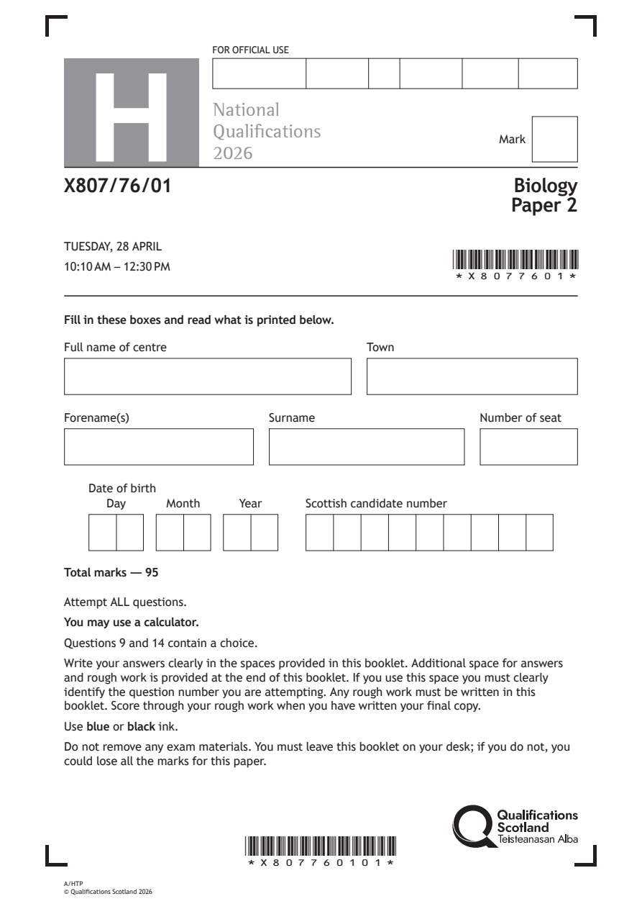
Selectable page text
FOR OFFICIAL USE
H
National
Qualications
Mark
2026
X807/76/01 Biology
Paper 2
TUESDAY, 28 APRIL
10:10 AM – 12:30 PM
*X8077601*
Fill in these boxes and read what is printed below.
Full name of centre Town
Forename(s) Surname Number of seat
Date of birth
Day Month Year Scottish candidate number
Total marks — 95
Attempt ALL questions.
You may use a calculator.
Questions 9 and 14 contain a choice.
Write your answers clearly in the spaces provided in this booklet. Additional space for answers
and rough work is provided at the end of this booklet. If you use this space you must clearly
identify the question number you are attempting. Any rough work must be written in this
booklet. Score through your rough work when you have written your final copy.
Use blue or black ink.
Do not remove any exam materials. You must leave this booklet on your desk; if you do not, you
could lose all the marks for this paper.
*X807760101*
A/HTP
© Qualifications Scotland 2026PDF page 2
Paper 2, Question 1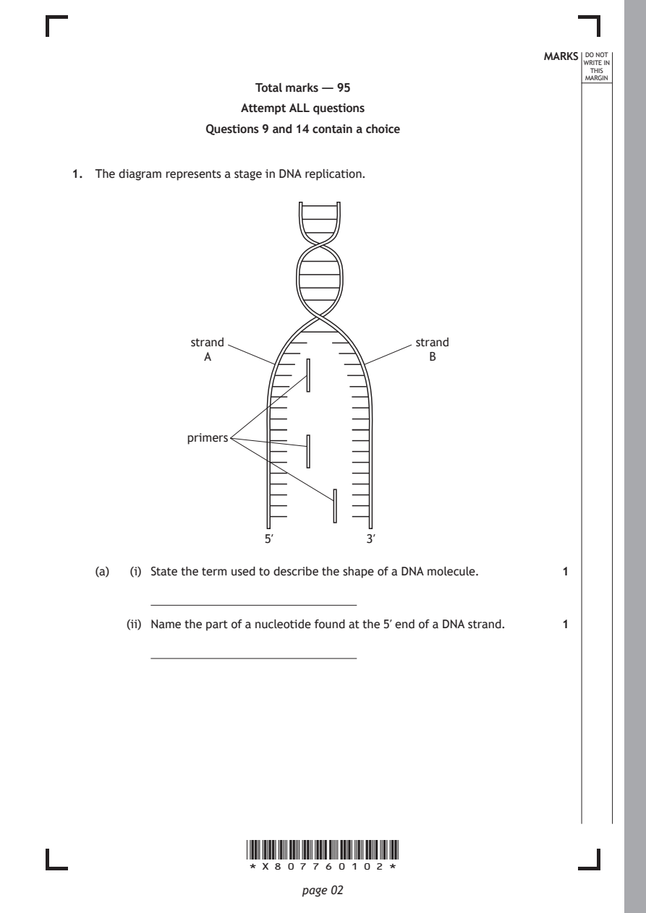
Selectable page text
MARKS _{W}^{D}_{R}^{O}_{I} _{T}^{N}OT
E IN
THIS
MARGIN
Total marks — 95
Attempt ALL questions
Questions 9 and 14 contain a choice
1. The diagram represents a stage in DNA replication.
strand strand
A B
primers
5′ 3′
(a) (i) State the term used to describe the shape of a DNA molecule. 1
(ii) Name the part of a nucleotide found at the 5′ end of a DNA strand. 1
*X807760102*
page 02PDF page 3
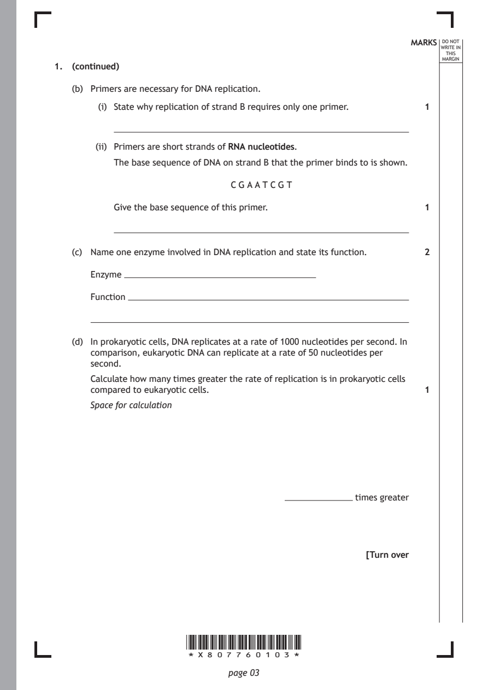
Selectable page text
MARKS _{W}^{D}_{R}^{O}_{I} _{T}^{N}OT
E IN
THIS
MARGIN
1. (continued)
(b) Primers are necessary for DNA replication.
(i) State why replication of strand B requires only one primer. 1
(ii) Primers are short strands of RNA nucleotides.
The base sequence of DNA on strand B that the primer binds to is shown.
C G A A T C G T
Give the base sequence of this primer. 1
(c) Name one enzyme involved in DNA replication and state its function. 2
Enzyme
Function
(d) In prokaryotic cells, DNA replicates at a rate of 1000 nucleotides per second. In
comparison, eukaryotic DNA can replicate at a rate of 50 nucleotides per
second.
Calculate how many times greater the rate of replication is in prokaryotic cells
compared to eukaryotic cells. 1
Space for calculation
��������������������������� times greater
[Turn over
*X807760103*
page 03PDF page 4
Paper 2, Question 2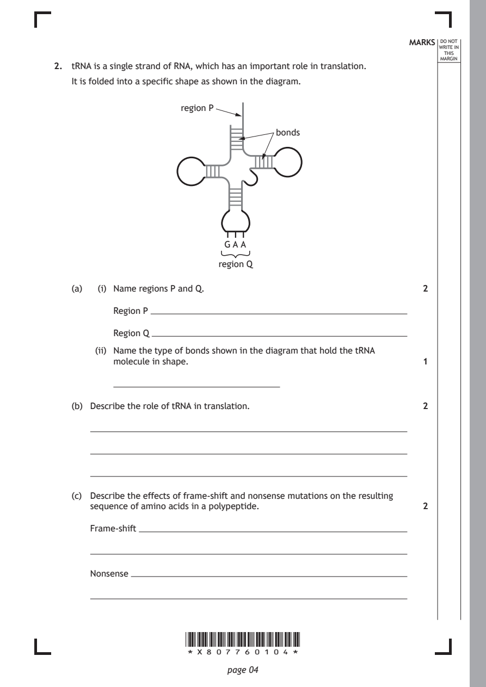
Selectable page text
MARKS _{W}^{D}_{R}^{O}_{I} _{T}^{N}OT
E IN
THIS
MARGIN
2. tRNA is a single strand of RNA, which has an important role in translation.
It is folded into a specific shape as shown in the diagram.
region P
bonds
GA A
region Q
(a) (i) Name regions P and Q. 2
Region P
Region Q
(ii) Name the type of bonds shown in the diagram that hold the tRNA
molecule in shape. 1
(b) Describe the role of tRNA in translation. 2
(c) Describe the effects of frame‑shift and nonsense mutations on the resulting
sequence of amino acids in a polypeptide. 2
Frame‑shift
Nonsense
*X807760104*
page 04PDF page 5
Paper 2, Question 3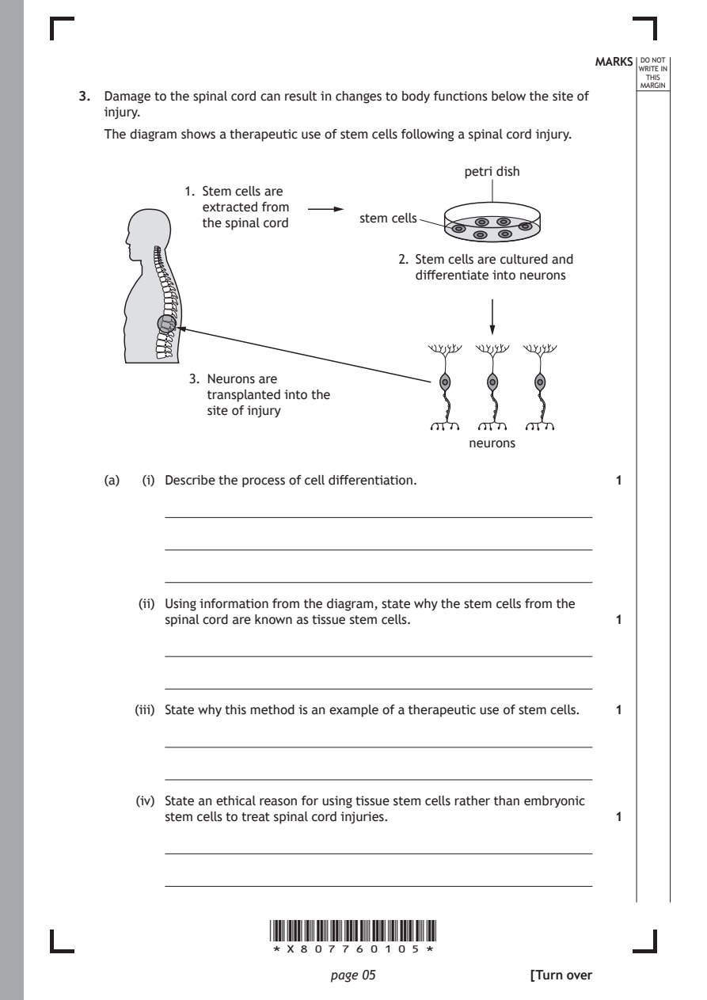
Selectable page text
MARKS _{W}^{D}_{R}^{O}_{I} _{T}^{N}OT
E IN
THIS
MARGIN
3. Damage to the spinal cord can result in changes to body functions below the site of
injury.
The diagram shows a therapeutic use of stem cells following a spinal cord injury.
petri dish
1. Stem cells are
extracted from
stem cells
the spinal cord
2. Stem cells are cultured and
differentiate into neurons
3. Neurons are
transplanted into the
site of injury
neurons
(a) (i) Describe the process of cell differentiation. 1
(ii) Using information from the diagram, state why the stem cells from the
spinal cord are known as tissue stem cells. 1
(iii) State why this method is an example of a therapeutic use of stem cells. 1
(iv) State an ethical reason for using tissue stem cells rather than embryonic
stem cells to treat spinal cord injuries. 1
*X807760105*
page 05 [Turn overPDF page 6
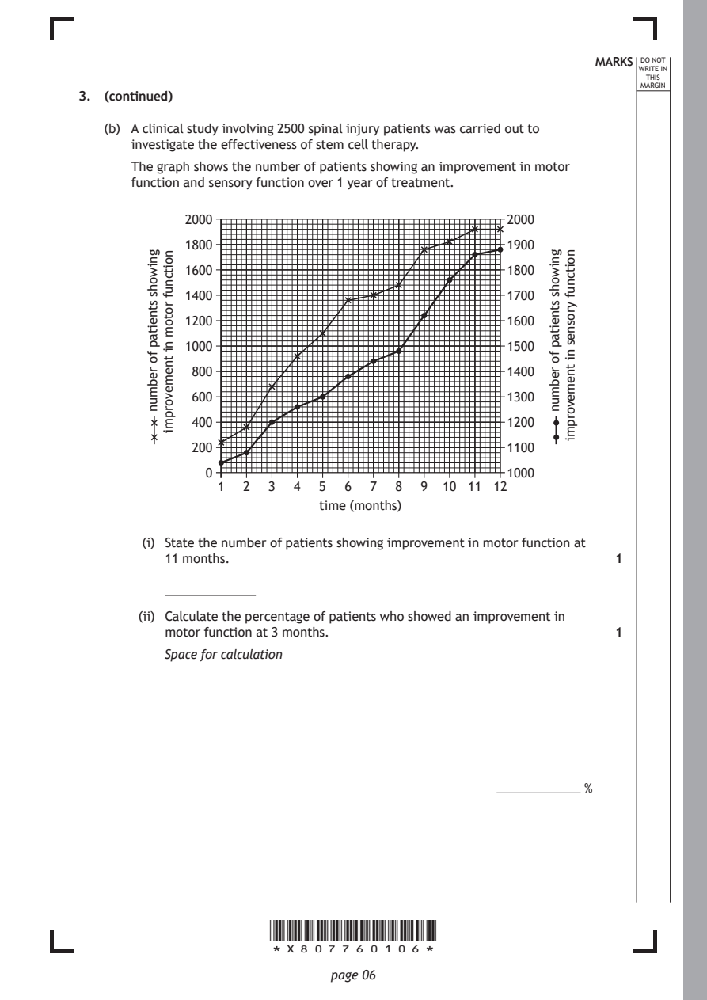
Selectable page text
MARKS _{W}^{D}_{R}^{O}_{I} _{T}^{N}OT
E IN
THIS
MARGIN
3. (continued)
(b) A clinical study involving 2500 spinal injury patients was carried out to
investigate the effectiveness of stem cell therapy.
The graph shows the number of patients showing an improvement in motor
function and sensory function over 1 year of treatment.
1 2 3 4 5 6 7 8 9 10 11 12
time (months)
*X807760106*
page 06
gniwohs
stneitap
fo
rebmun
noitcnuf
rotom
ni
tnemevorpmi
gniwohs
stneitap
fo
rebmun
noitcnuf
yrosnes
ni
tnemevorpmi
2000 2000
1800 1900
1600 1800
1400 1700
1200 1600
1000 1500
800 1400
600 1300
400 1200
200 1100
0 1000
(i) State the number of patients showing improvement in motor function at
11 months. 1
(ii) Calculate the percentage of patients who showed an improvement in
motor function at 3 months. 1
Space for calculation
����������������������� %PDF page 7
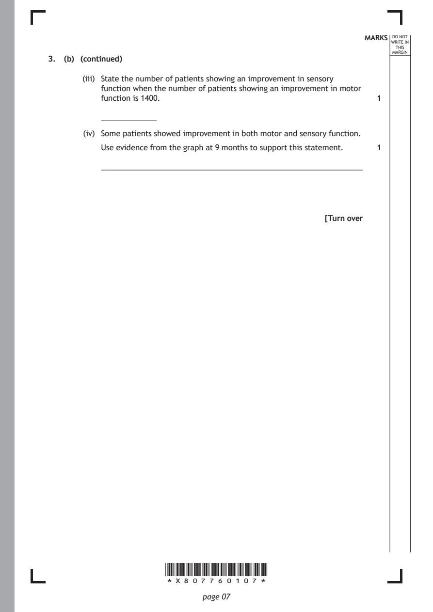
Selectable page text
MARKS _{W}^{D}_{R}^{O}_{I} _{T}^{N}OT
E IN
THIS
MARGIN
3. (b) (continued)
(iii) State the number of patients showing an improvement in sensory
function when the number of patients showing an improvement in motor
function is 1400. 1
(iv) Some patients showed improvement in both motor and sensory function.
Use evidence from the graph at 9 months to support this statement. 1
[Turn over
*X807760107*
page 07PDF page 8
Paper 2, Question 4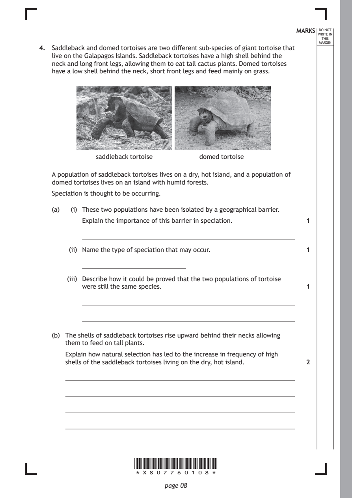
Selectable page text
MARKS _{W}^{D}_{R}^{O}_{I} _{T}^{N}OT
E IN
THIS
MARGIN
4. Saddleback and domed tortoises are two different sub‑species of giant tortoise that
live on the Galapagos Islands. Saddleback tortoises have a high shell behind the
neck and long front legs, allowing them to eat tall cactus plants. Domed tortoises
have a low shell behind the neck, short front legs and feed mainly on grass.
saddleback tortoise domed tortoise
A population of saddleback tortoises lives on a dry, hot island, and a population of
domed tortoises lives on an island with humid forests.
Speciation is thought to be occurring.
(a) (i) These two populations have been isolated by a geographical barrier.
Explain the importance of this barrier in speciation. 1
(ii) Name the type of speciation that may occur. 1
(iii) Describe how it could be proved that the two populations of tortoise
were still the same species. 1
(b) The shells of saddleback tortoises rise upward behind their necks allowing
them to feed on tall plants.
Explain how natural selection has led to the increase in frequency of high
shells of the saddleback tortoises living on the dry, hot island. 2
*X807760108*
page 08PDF page 9
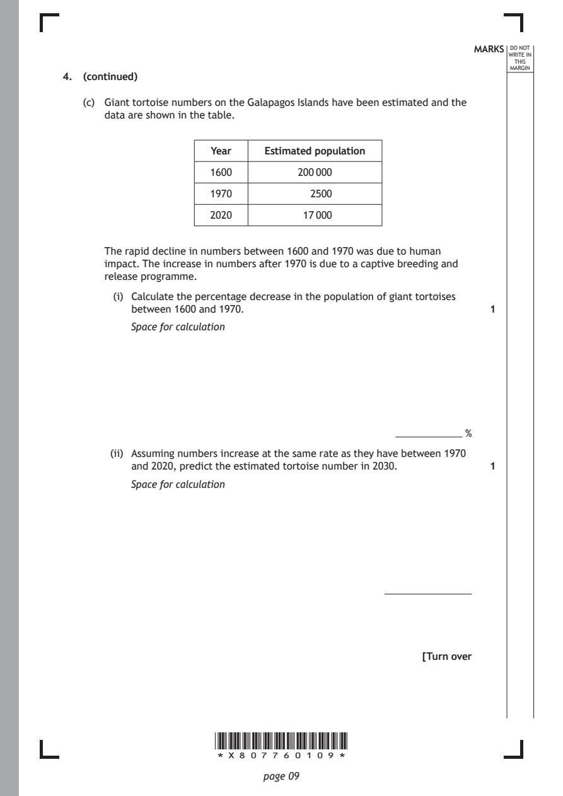
Selectable page text
MARKS _{W}^{D}_{R}^{O}_{I} _{T}^{N}OT
E IN
THIS
MARGIN
4. (continued)
(c) Giant tortoise numbers on the Galapagos Islands have been estimated and the
data are shown in the table.
Year Estimated population
1600 200 000
1970 2500
2020 17 000
The rapid decline in numbers between 1600 and 1970 was due to human
impact. The increase in numbers after 1970 is due to a captive breeding and
release programme.
(i) Calculate the percentage decrease in the population of giant tortoises
between 1600 and 1970. 1
Space for calculation
����������������������� %
(ii) Assuming numbers increase at the same rate as they have between 1970
and 2020, predict the estimated tortoise number in 2030. 1
Space for calculation
������������������������������
[Turn over
*X807760109*
page 09PDF page 10
Paper 2, Question 5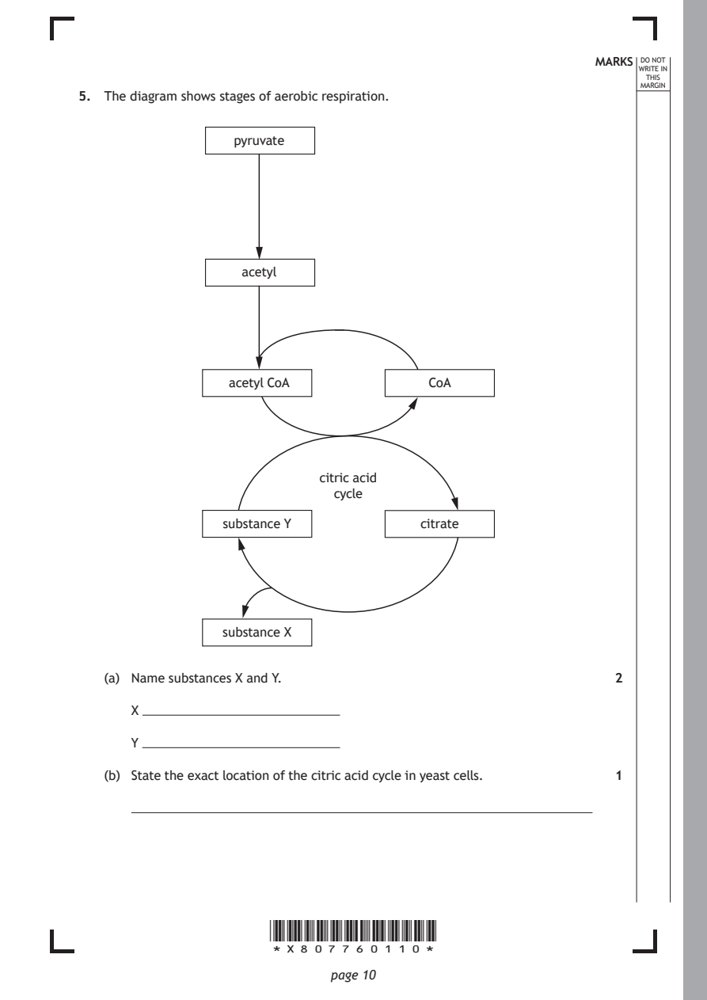
Selectable page text
MARKS _{W}^{D}_{R}^{O}_{I} _{T}^{N}OT
E IN
THIS
MARGIN
5. The diagram shows stages of aerobic respiration.
pyruvate
acetyl
acetyl CoA CoA
citric acid
cycle
substance Y citrate
substance X
(a) Name substances X and Y. 2
X
Y
(b) State the exact location of the citric acid cycle in yeast cells. 1
*X807760110*
page 10PDF page 11
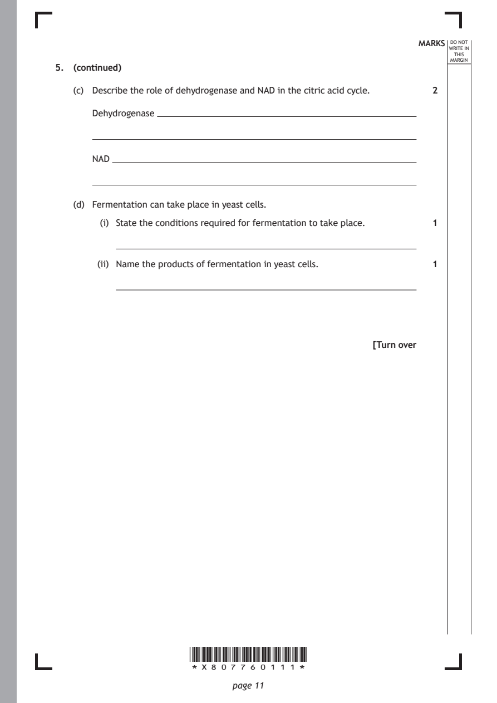
Selectable page text
MARKS _{W}^{D}_{R}^{O}_{I} _{T}^{N}OT
E IN
THIS
MARGIN
5. (continued)
(c) Describe the role of dehydrogenase and NAD in the citric acid cycle. 2
Dehydrogenase
NAD
(d) Fermentation can take place in yeast cells.
(i) State the conditions required for fermentation to take place. 1
(ii) Name the products of fermentation in yeast cells. 1
[Turn over
*X807760111*
page 11PDF page 12
Paper 2, Question 6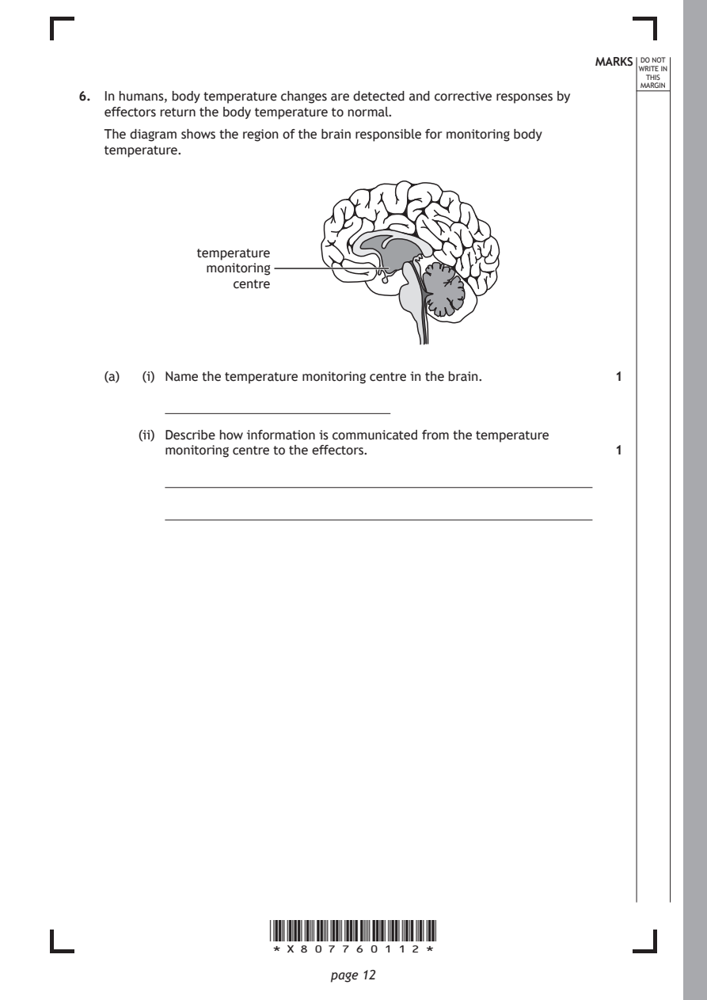
Selectable page text
MARKS _{W}^{D}_{R}^{O}_{I} _{T}^{N}OT
E IN
THIS
MARGIN
6. In humans, body temperature changes are detected and corrective responses by
effectors return the body temperature to normal.
The diagram shows the region of the brain responsible for monitoring body
temperature.
temperature
monitoring
centre
(a) (i) Name the temperature monitoring centre in the brain. 1
(ii) Describe how information is communicated from the temperature
monitoring centre to the effectors. 1
*X807760112*
page 12PDF page 13
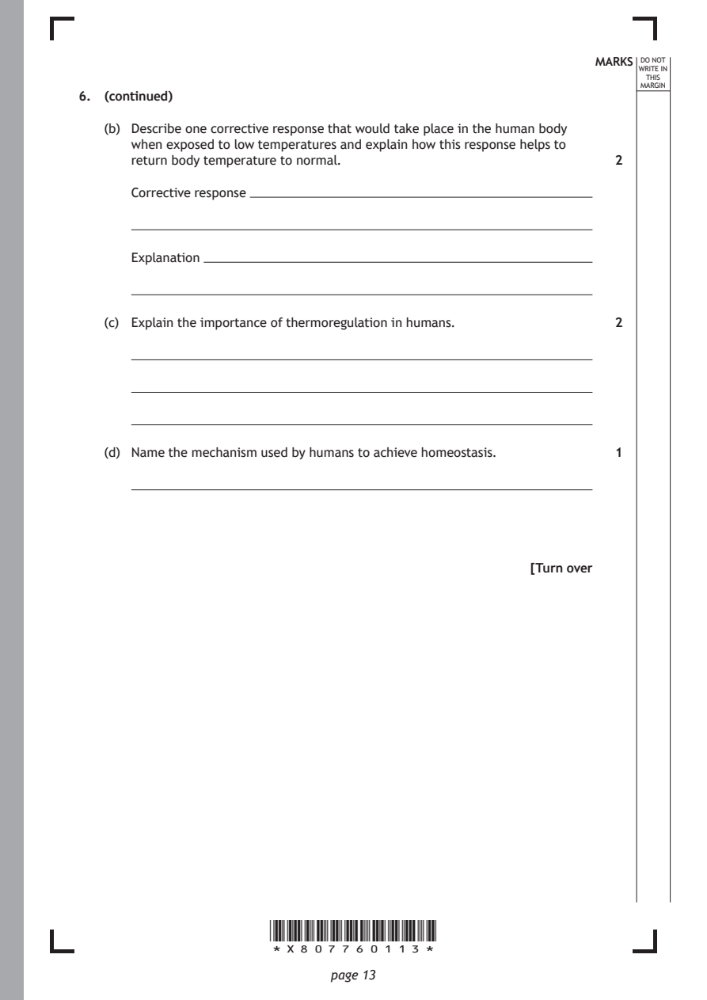
Selectable page text
MARKS _{W}^{D}_{R}^{O}_{I} _{T}^{N}OT
E IN
THIS
MARGIN
6. (continued)
(b) Describe one corrective response that would take place in the human body
when exposed to low temperatures and explain how this response helps to
return body temperature to normal. 2
Corrective response
Explanation
(c) Explain the importance of thermoregulation in humans. 2
(d) Name the mechanism used by humans to achieve homeostasis. 1
[Turn over
*X807760113*
page 13PDF page 14
Paper 2, Question 7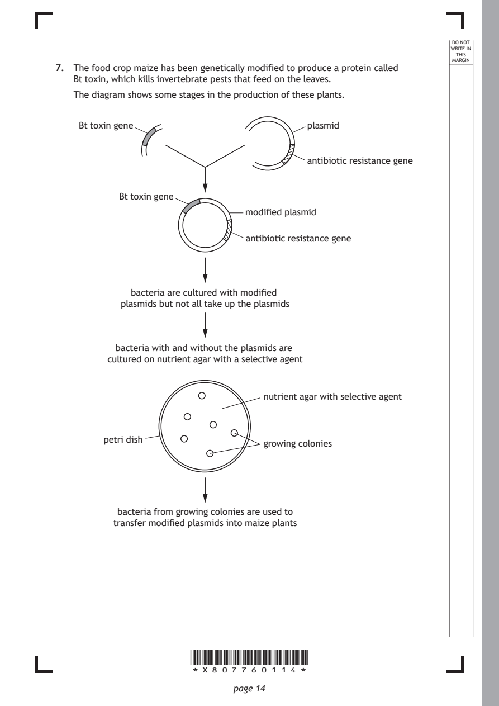
Selectable page text
DO NOT
WRITE IN
THIS
MARGIN
7. The food crop maize has been genetically modified to produce a protein called
Bt toxin, which kills invertebrate pests that feed on the leaves.
The diagram shows some stages in the production of these plants.
Bt toxin gene plasmid
antibiotic resistance gene
Bt toxin gene
modified plasmid
antibiotic resistance gene
bacteria are cultured with modified
plasmids but not all take up the plasmids
bacteria with and without the plasmids are
cultured on nutrient agar with a selective agent
nutrient agar with selective agent
petri dish
growing colonies
bacteria from growing colonies are used to
transfer modified plasmids into maize plants
*X807760114*
page 14PDF page 15
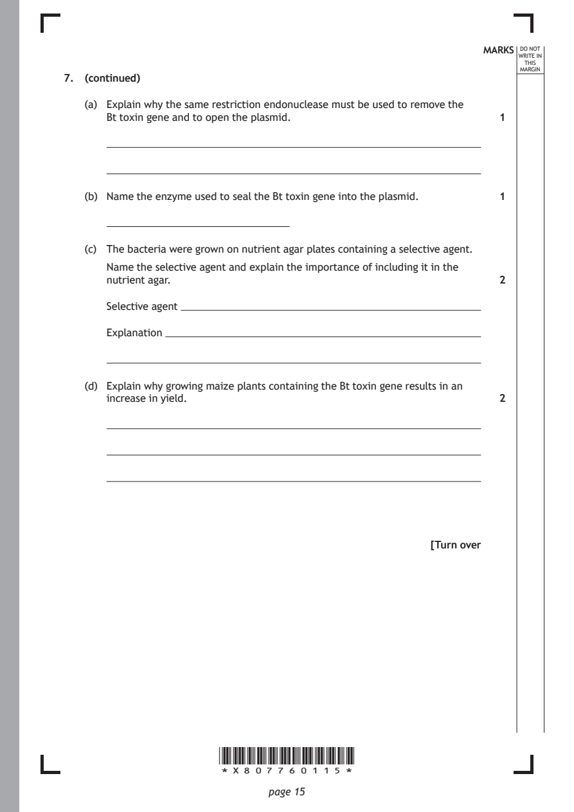
Selectable page text
MARKS _{W}^{D}_{R}^{O}_{I} _{T}^{N}OT
E IN
THIS
MARGIN
7. (continued)
(a) Explain why the same restriction endonuclease must be used to remove the
Bt toxin gene and to open the plasmid. 1
(b) Name the enzyme used to seal the Bt toxin gene into the plasmid. 1
(c) The bacteria were grown on nutrient agar plates containing a selective agent.
Name the selective agent and explain the importance of including it in the
nutrient agar. 2
Selective agent
Explanation
(d) Explain why growing maize plants containing the Bt toxin gene results in an
increase in yield. 2
[Turn over
*X807760115*
page 15PDF page 16
Paper 2, Question 8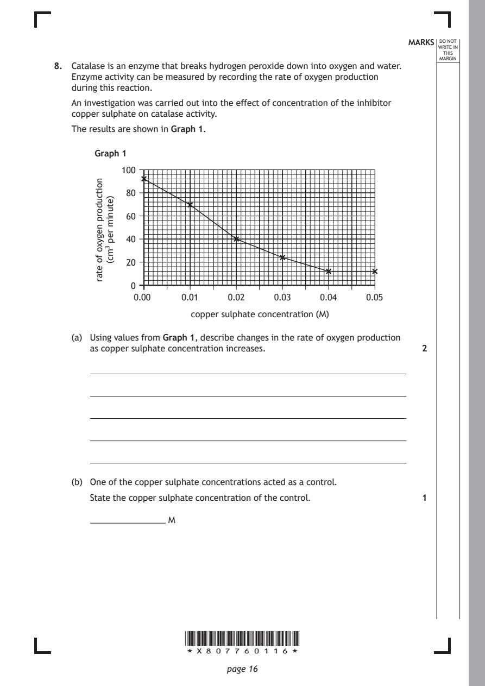
Selectable page text
MARKS _{W}^{D}_{R}^{O}_{I} _{T}^{N}OT
E IN
THIS
MARGIN
8. Catalase is an enzyme that breaks hydrogen peroxide down into oxygen and water.
Enzyme activity can be measured by recording the rate of oxygen production
during this reaction.
An investigation was carried out into the effect of concentration of the inhibitor
copper sulphate on catalase activity.
The results are shown in Graph 1.
Graph 1
100
80
60
40
20
0
copper sulphate concentration (M)
*X807760116*
page 16
noitcudorp
negyxo
fo
etar
)etunim
rep
3mc(
0.00 0.01 0.02 0.03 0.04 0.05
(a) Using values from Graph 1, describe changes in the rate of oxygen production
as copper sulphate concentration increases. 2
(b) One of the copper sulphate concentrations acted as a control.
State the copper sulphate concentration of the control. 1
MPDF page 17
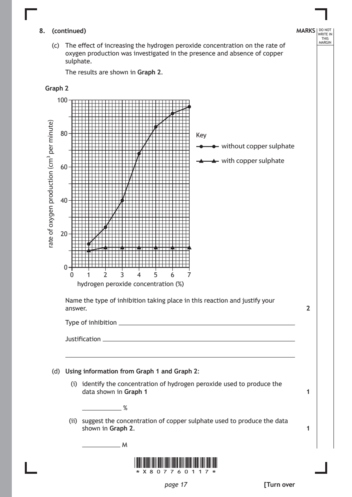
Selectable page text
8. (continued) MARKS _{W}^{D}_{R}^{O}_{I} _{T}^{N}OT
E IN
THIS
(c) The effect of increasing the hydrogen peroxide concentration on the rate of MARGIN
oxygen production was investigated in the presence and absence of copper
sulphate.
The results are shown in Graph 2.
Graph 2
100
80
60
40
20
0
hydrogen peroxide concentration (%)
*X807760117*
page 17
)etunim
rep
3mc(
noitcudorp
negyxo
fo
etar
Key
without copper sulphate
with copper sulphate
0 1 2 3 4 5 6 7
Name the type of inhibition taking place in this reaction and justify your
answer. 2
Type of inhibition
Justification
(d) Using information from Graph 1 and Graph 2:
(i) identify the concentration of hydrogen peroxide used to produce the
data shown in Graph 1 1
%
(ii) suggest the concentration of copper sulphate used to produce the data
shown in Graph 2. 1
M
[Turn overPDF page 18
Paper 2, Question 9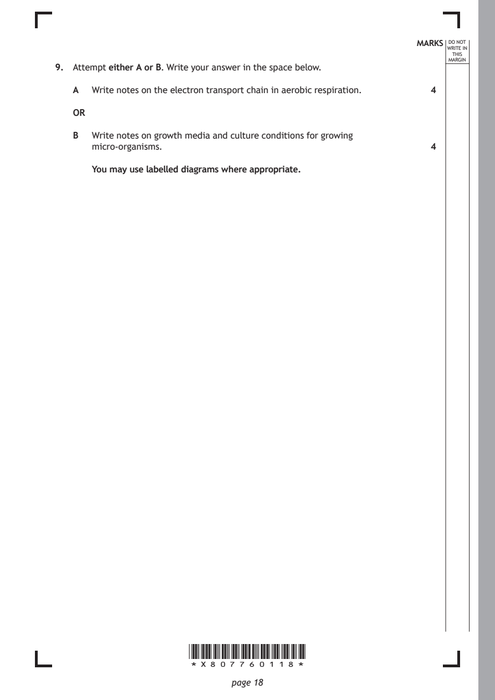
Selectable page text
MARKS _{W}^{D}_{R}^{O}_{I} _{T}^{N}OT
E IN
THIS
MARGIN
9. Attempt either A or B. Write your answer in the space below.
A Write notes on the electron transport chain in aerobic respiration. 4
OR
B Write notes on growth media and culture conditions for growing
micro‑organisms. 4
You may use labelled diagrams where appropriate.
*X807760118*
page 18PDF page 19
Selectable page text
[Turn over for next question
DO NOT WRITE ON THIS PAGE
*X807760119*
page 19PDF page 20
Paper 2, Question 10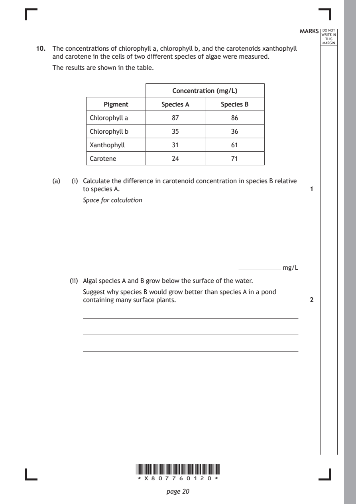
Selectable page text
MARKS _{W}^{D}_{R}^{O}_{I} _{T}^{N}OT
E IN
THIS
MARGIN
10. The concentrations of chlorophyll a, chlorophyll b, and the carotenoids xanthophyll
and carotene in the cells of two different species of algae were measured.
The results are shown in the table.
Concentration (mg/L)
Pigment Species A Species B
Chlorophyll a 87 86
Chlorophyll b 35 36
Xanthophyll 31 61
Carotene 24 71
(a) (i) Calculate the difference in carotenoid concentration in species B relative
to species A. 1
Space for calculation
����������������������� mg/L
(ii) Algal species A and B grow below the surface of the water.
Suggest why species B would grow better than species A in a pond
containing many surface plants. 2
*X807760120*
page 20PDF page 21
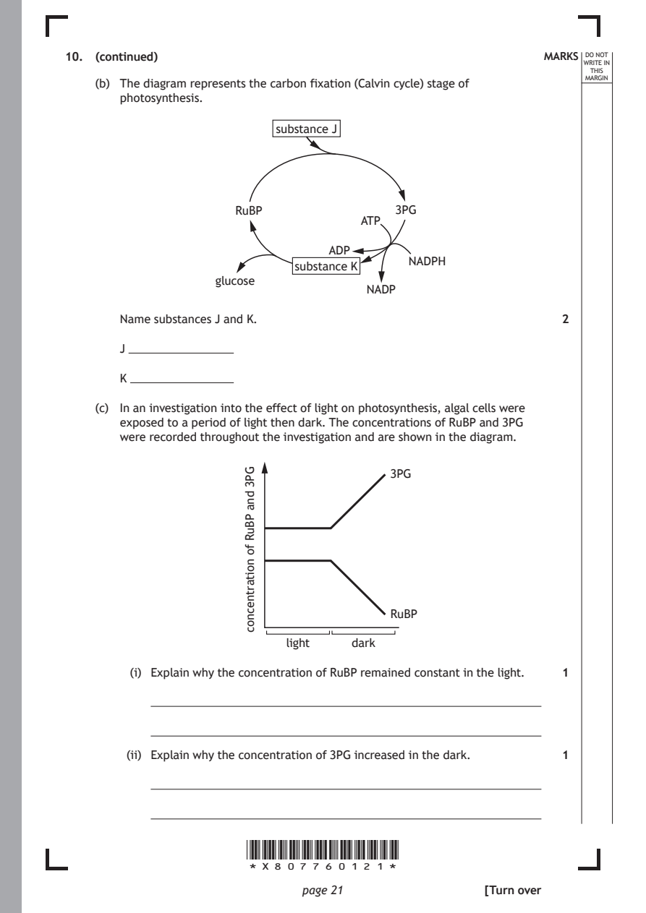
Selectable page text
10. (continued) MARKS _{W}^{D}_{R}^{O}_{I} _{T}^{N}OT
E IN
THIS
(b) The diagram represents the carbon fixation (Calvin cycle) stage of MARGIN
photosynthesis.
substance J
RuBP 3PG
ATP
ADP
NADPH
substance K
glucose
NADP
Name substances J and K.
J
K
(c) In an investigation into the effect of light on photosynthesis, algal cells were
exposed to a period of light then dark. The concentrations of RuBP and 3PG
were recorded throughout the investigation and are shown in the diagram.
3PG
RuBP
light
*X807760121*
page 21
GP3
dna
PBuR
fo
noitartnecnoc
2
dark
(i) Explain why the concentration of RuBP remained constant in the light. 1
(ii) Explain why the concentration of 3PG increased in the dark. 1
[Turn overPDF page 22
Paper 2, Question 11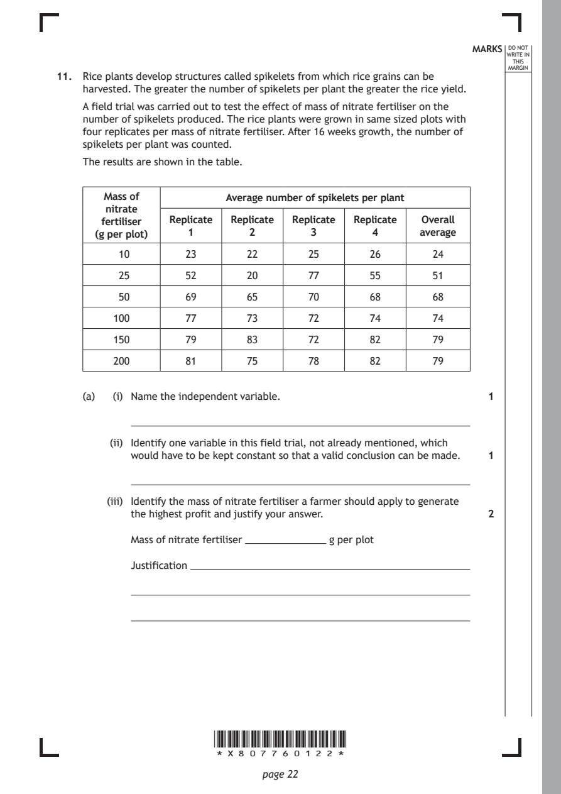
Selectable page text
MARKS _{W}^{D}_{R}^{O}_{I} _{T}^{N}OT
E IN
THIS
MARGIN
11. Rice plants develop structures called spikelets from which rice grains can be
harvested. The greater the number of spikelets per plant the greater the rice yield.
A field trial was carried out to test the effect of mass of nitrate fertiliser on the
number of spikelets produced. The rice plants were grown in same sized plots with
four replicates per mass of nitrate fertiliser. After 16 weeks growth, the number of
spikelets per plant was counted.
The results are shown in the table.
Mass of Average number of spikelets per plant
nitrate
fertiliser Replicate Replicate Replicate Replicate Overall
(g per plot) 1 2 3 4 average
10 23 22 25 26 24
25 52 20 77 55 51
50 69 65 70 68 68
100 77 73 72 74 74
150 79 83 72 82 79
200 81 75 78 82 79
(a) (i) Name the independent variable. 1
(ii) Identify one variable in this field trial, not already mentioned, which
would have to be kept constant so that a valid conclusion can be made. 1
(iii) Identify the mass of nitrate fertiliser a farmer should apply to generate
the highest profit and justify your answer. 2
Mass of nitrate fertiliser ���������������������������� g per plot
Justification
*X807760122*
page 22PDF page 23
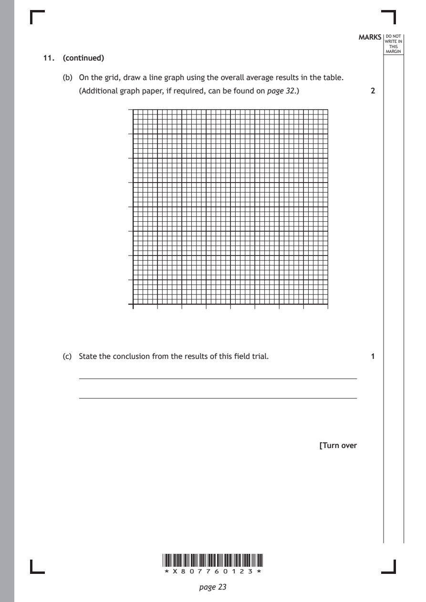
Selectable page text
MARKS _{W}^{D}_{R}^{O}_{I} _{T}^{N}OT
E IN
THIS
MARGIN
11. (continued)
(b) On the grid, draw a line graph using the overall average results in the table.
(Additional graph paper, if required, can be found on page 32.) 2
(c) State the conclusion from the results of this field trial. 1
[Turn over
*X807760123*
page 23PDF page 24
Paper 2, Question 12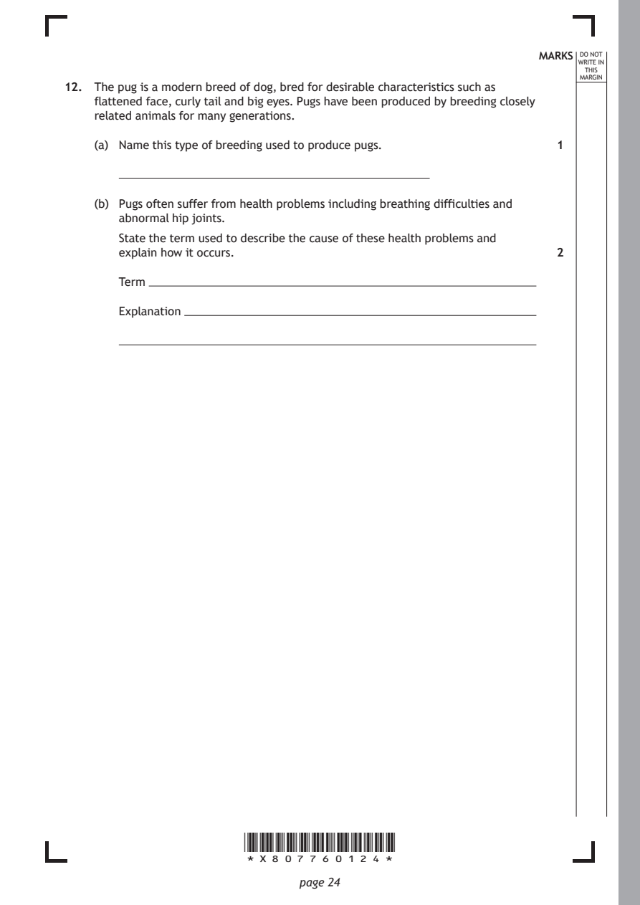
Selectable page text
MARKS _{W}^{D}_{R}^{O}_{I} _{T}^{N}OT
E IN
THIS
MARGIN
12. The pug is a modern breed of dog, bred for desirable characteristics such as
flattened face, curly tail and big eyes. Pugs have been produced by breeding closely
related animals for many generations.
(a) Name this type of breeding used to produce pugs. 1
(b) Pugs often suffer from health problems including breathing difficulties and
abnormal hip joints.
State the term used to describe the cause of these health problems and
explain how it occurs. 2
Term
Explanation
*X807760124*
page 24PDF page 25
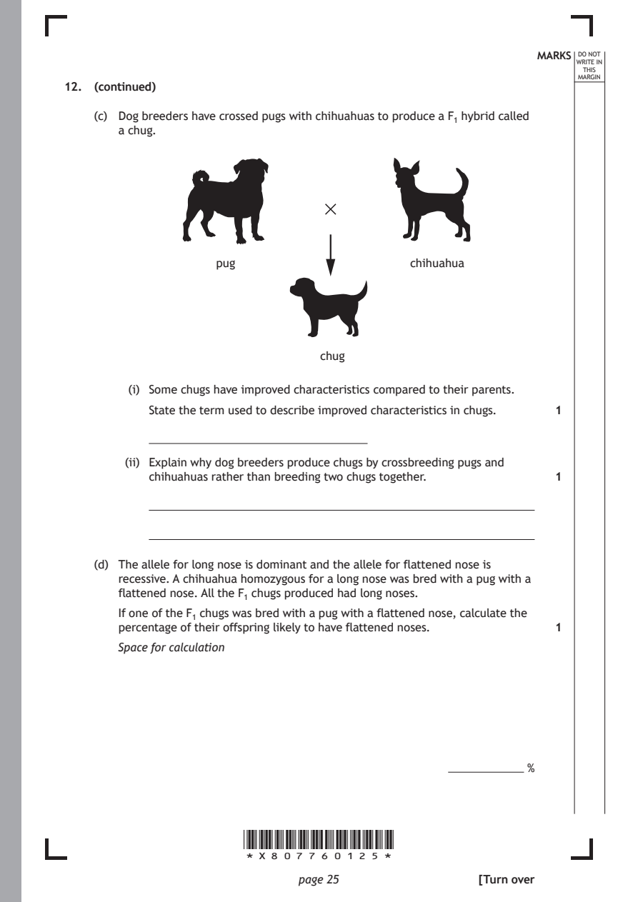
Selectable page text
MARKS _{W}^{D}_{R}^{O}_{I} _{T}^{N}OT
E IN
THIS
MARGIN
12. (continued)
(c) Dog breeders have crossed pugs with chihuahuas to produce a F₁ hybrid called
a chug.
pug chihuahua
chug
(i) Some chugs have improved characteristics compared to their parents.
State the term used to describe improved characteristics in chugs. 1
(ii) Explain why dog breeders produce chugs by crossbreeding pugs and
chihuahuas rather than breeding two chugs together. 1
(d) The allele for long nose is dominant and the allele for flattened nose is
recessive. A chihuahua homozygous for a long nose was bred with a pug with a
flattened nose. All the F₁ chugs produced had long noses.
If one of the F₁ chugs was bred with a pug with a flattened nose, calculate the
percentage of their offspring likely to have flattened noses. 1
Space for calculation
����������������������� %
*X807760125*
page 25 [Turn overPDF page 26
Paper 2, Question 13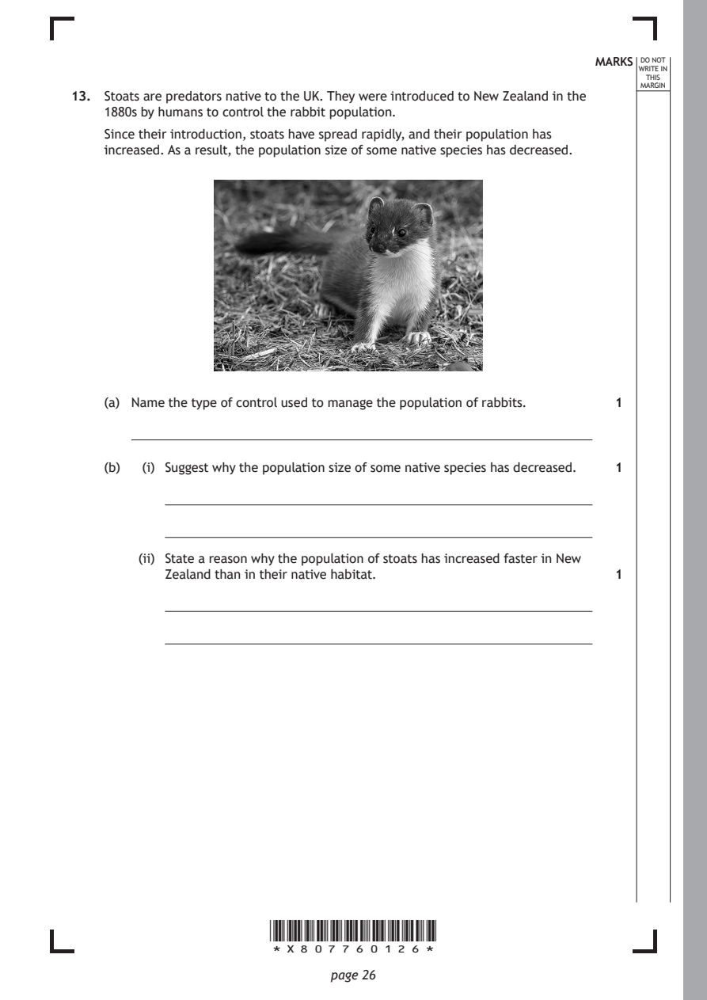
Selectable page text
MARKS _{W}^{D}_{R}^{O}_{I} _{T}^{N}OT
E IN
THIS
MARGIN
13. Stoats are predators native to the UK. They were introduced to New Zealand in the
1880s by humans to control the rabbit population.
Since their introduction, stoats have spread rapidly, and their population has
increased. As a result, the population size of some native species has decreased.
(a) Name the type of control used to manage the population of rabbits. 1
(b) (i) Suggest why the population size of some native species has decreased. 1
(ii) State a reason why the population of stoats has increased faster in New
Zealand than in their native habitat. 1
*X807760126*
page 26PDF page 27
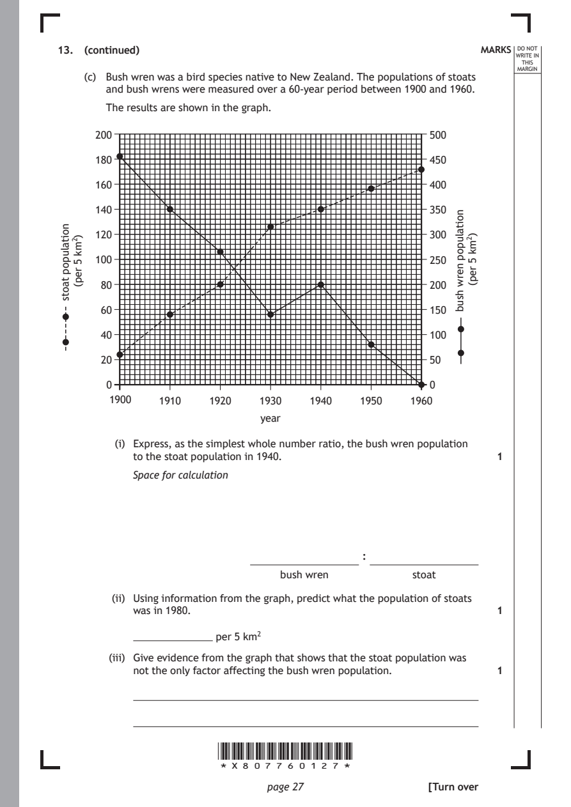
Selectable page text
13. (continued) MARKS _{W}^{D}_{R}^{O}_{I} _{T}^{N}OT
E IN
THIS
MARGIN
(c) Bush wren was a bird species native to New Zealand. The populations of stoats
and bush wrens were measured over a 60‑year period between 1900 and 1960.
The results are shown in the graph.
*X807760127*
page 27
noitalupop
nerw
hsub
)2mk
5
rep(
200 500
180 450
160 400
140 350
120 300
100 250
80 200
60 150
40 100
20 50
0 0
1900 1910 1920 1930 1940 1950 1960
year
noitalupop
taots
)2mk
5
rep(
(i) Express, as the simplest whole number ratio, the bush wren population
to the stoat population in 1940. 1
Space for calculation
:
bush wren stoat
(ii) Using information from the graph, predict what the population of stoats
was in 1980. 1
per 5 km²
(iii) Give evidence from the graph that shows that the stoat population was
not the only factor affecting the bush wren population. 1
[Turn overPDF page 28
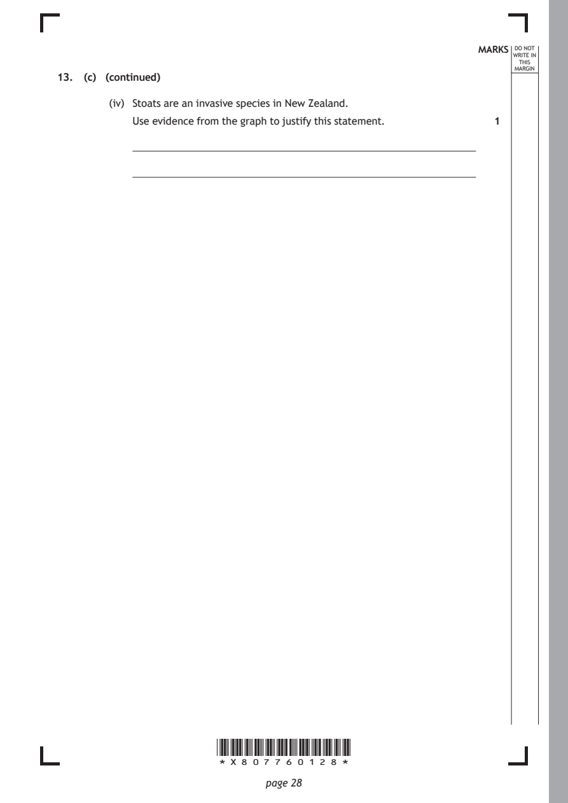
Selectable page text
MARKS _{W}^{D}_{R}^{O}_{I} _{T}^{N}OT
E IN
THIS
MARGIN
13. (c) (continued)
(iv) Stoats are an invasive species in New Zealand.
Use evidence from the graph to justify this statement. 1
*X807760128*
page 28PDF page 29
Paper 2, Question 14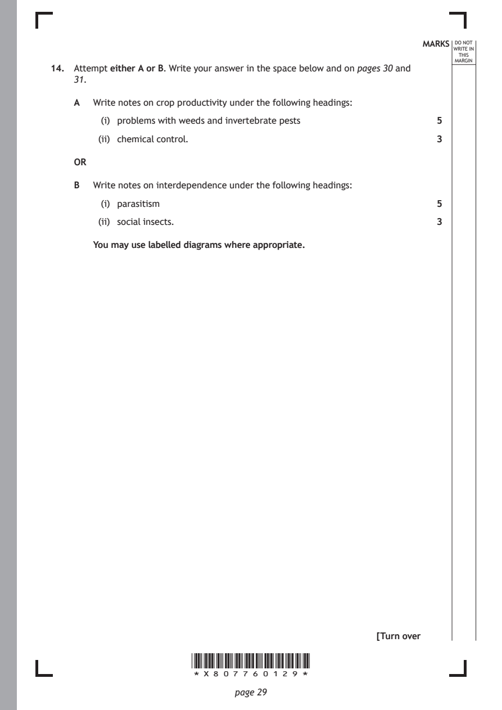
Selectable page text
MARKS _{W}^{D}_{R}^{O}_{I} _{T}^{N}OT
E IN
THIS
MARGIN
14. Attempt either A or B. Write your answer in the space below and on pages 30 and
31.
A Write notes on crop productivity under the following headings:
(i) problems with weeds and invertebrate pests 5
(ii) chemical control. 3
OR
B Write notes on interdependence under the following headings:
(i) parasitism 5
(ii) social insects. 3
You may use labelled diagrams where appropriate.
[Turn over
*X807760129*
page 29PDF page 30
Selectable page text
DO NOT
WRITE IN
THIS
MARGIN
ADDITIONAL SPACE FOR ANSWER to question 14
*X807760130*
page 30PDF page 31
Selectable page text
DO NOT
WRITE IN
THIS
MARGIN
ADDITIONAL SPACE FOR ANSWER to question 14
[END OF QUESTION PAPER]
*X807760131*
page 31PDF page 32
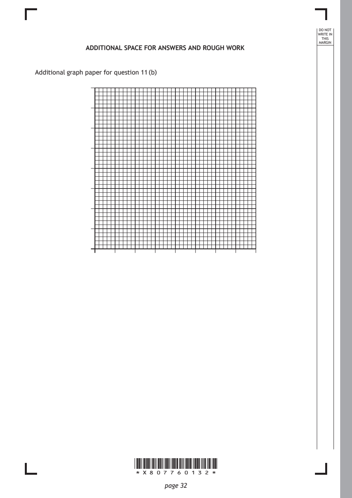
Selectable page text
DO NOT
WRITE IN
THIS
MARGIN
ADDITIONAL SPACE FOR ANSWERS AND ROUGH WORK
Additional graph paper for question 11 (b)
*X807760132*
page 32PDF page 33
Selectable page text
DO NOT
WRITE IN
THIS
MARGIN
ADDITIONAL SPACE FOR ANSWERS AND ROUGH WORK
*X807760133*
page 33PDF page 34
Selectable page text
DO NOT
WRITE IN
THIS
MARGIN
ADDITIONAL SPACE FOR ANSWERS AND ROUGH WORK
*X807760134*
page 34PDF page 35
Selectable page text
[BLANK PAGE]
DO NOT WRITE ON THIS PAGE
*X807760135*
page 35PDF page 36
Selectable page text
[BLANK PAGE]
DO NOT WRITE ON THIS PAGE
Acknowledgement of copyright
Question 4 LevelUpDigitalMedia/shutterstock.com
Bonaime/shutterstock.com
Question 13 Paul Abrahams/shutterstock.com
*X807760136*
page 36